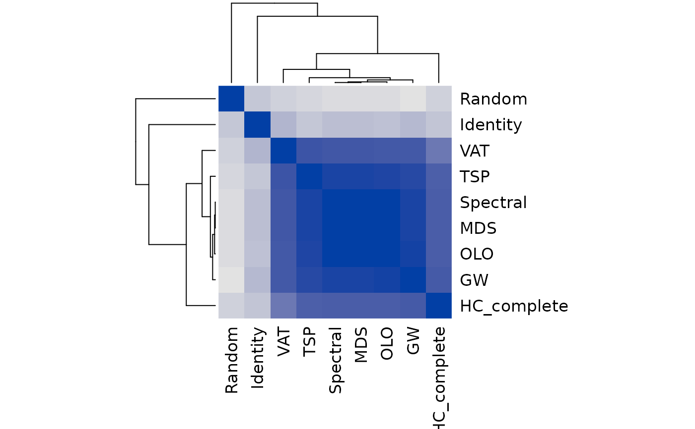
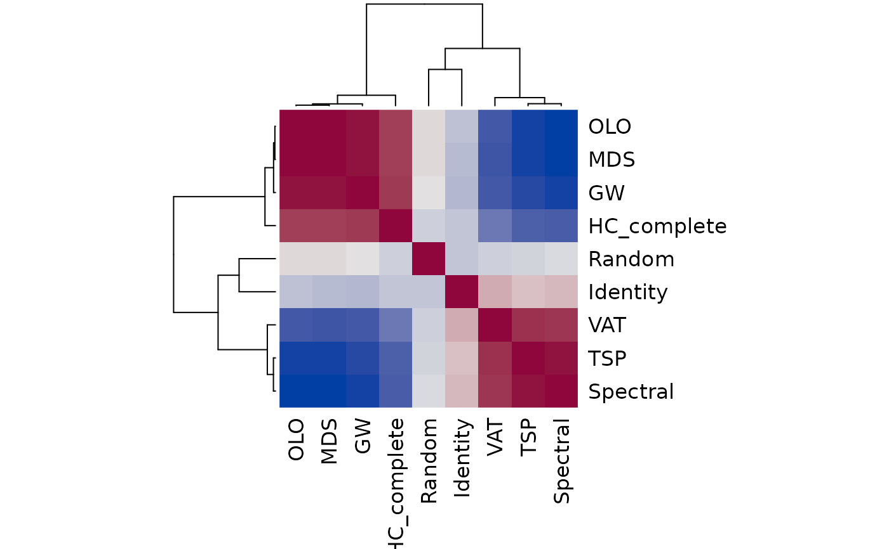
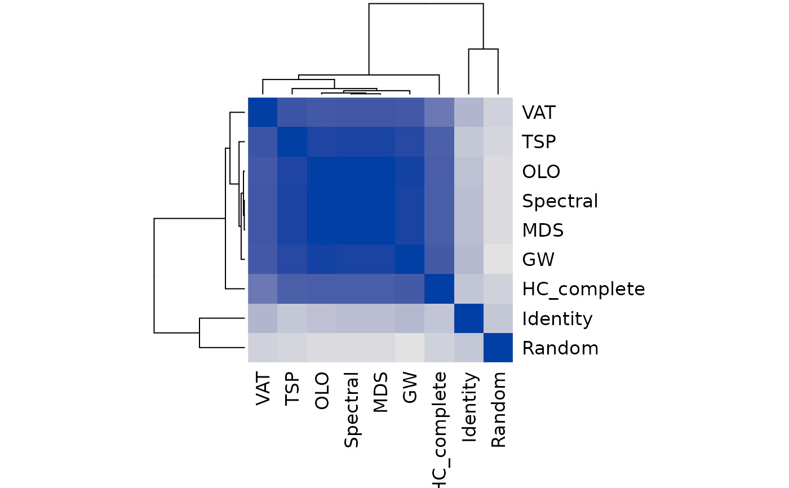
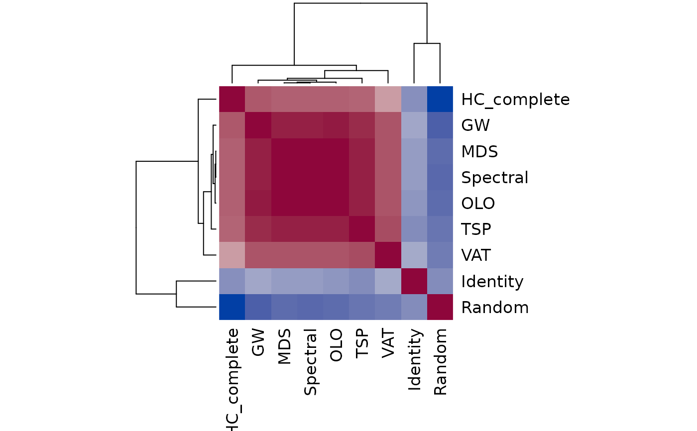
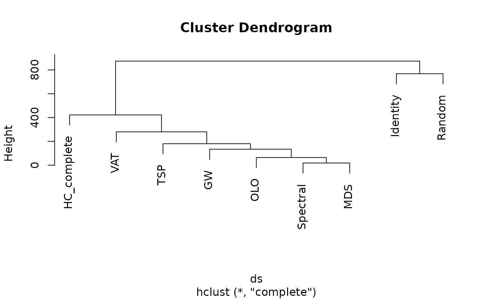

Calculates dissimilarities/correlations between seriation orders in a list of type ser_permutation_vector.
Usage
ser_dist(x, y = NULL, method = "spearman", reverse = TRUE, ...)
ser_cor(x, y = NULL, method = "spearman", reverse = TRUE, test = FALSE)
ser_align(x, method = "spearman")Arguments
- x
set of seriation orders as a list with elements which can be coerced into ser_permutation_vector objects.
- y
if not
NULLthen a single seriation order can be specified. In this casexhas to be a single seriation order and not a list.- method
a character string with the name of the used measure. Available measures are for correlation and distances are
"kendall","spearman"and"ppc"(positional proximity coefficient). For distances only the additional methods"manhattan","euclidean","hamming", and"aprd"(absolute pairwise rank differences) are also available.- reverse
a logical indicating if the revers orders should also be checked in for rank-based methods.
- ...
Further arguments passed on to the method.
- test
a logical indicating if a correlation test should be performed.
Value
ser_dist()returns an object of class stats::dist.ser_align()returns a new list with elements of class ser_permutation.
Details
For seriation, an order and its reverse are considered identical and are
often just an artifact due to the method that creates the order.
This is one of the major differences between seriation orders and rankings
which impacts how correlations and similarities between seriation orders are
calculated. The default setting reverse = TRUE corrects for this issue.
ser_cor() calculates the correlation between two seriation orders.
For ranking-based correlation measures (Spearman and
Kendall) the absolute value of the correlation is returned. This effectively
corrects for correlations between reversed orders but has the effect that
no negative correlations exist.
For test = TRUE, the appropriate test for association is performed
and a matrix with p-values is returned as the attribute "p-value".
Note that no correction for multiple testing is performed.
For ser_dist(), the correlation coefficients (Kendall's tau and
Spearman's rho) are converted into a dissimilarity by taking one minus the
correlation value. The Manhattan distance between the ranks in a
linear order is equivalent to Spearman's footrule metric (Diaconis 1988).
For the non-correlation based measures,
reverse = TRUE returns the pairwise minima using also the reversed
order.
Two precedence invariant measure especially developed for seriation are
available. Here reverse is ignored.
The positional proximity coefficient (ppc) is a precedence invariant measure based on product of the squared positional distances in two permutations defined as (see Goulermas et al 2016):
$$d_{ppc}(R, S) = 1/h \sum_{j=2}^n \sum_{i=1}^{j-1} (\pi_R(i)-\pi_R(j))^2 * (\pi_S(i)-\pi_S(j))^2,$$
where \(R\) and \(S\) are two seriation orders, \(pi_R\) and \(pi_S\) are the associated permutation vectors and \(h\) is a normalization factor. The associated generalized correlation coefficient is defined as \(1-d_{ppc}\).
The absolute pairwise rank difference (aprd) is also precedence invariant and defined as a distance measure:
$$d_{aprd}(R, S) = \sum_{j=2}^n \sum_{i=1}^{j-1} | |\pi_R(i)-\pi_R(j)| - |\pi_S(i)-\pi_S(j)| |^p,$$
where \(p\) is the power which can be passed on as parameter p and
is by default set to 2.
ser_align() tries to normalize the direction in a list of seriations
such that ranking-based methods can be used. We add for each permutation
also the reversed order to the set and then use a modified version of Prim's
algorithm for finding a minimum spanning tree (MST) to choose if the
original seriation order or its reverse should be used. We retain the direction
of each order that is added to the MST first.
Every time an order is added, its reverse is removed from the possible
remaining orders.
References
P. Diaconis (1988): Group Representations in Probability and Statistics, Institute of Mathematical Statistics, Hayward, CA.
J.Y. Goulermas, A. Kostopoulos, and T. Mu (2016): A New Measure for Analyzing and Fusing Sequences of Objects. IEEE Transactions on Pattern Analysis and Machine Intelligence 38(5):833-48. doi:10.1109/TPAMI.2015.2470671
See also
Other permutation:
get_order(),
permutation_vector2matrix(),
permute(),
reorder.hclust(),
ser_permutation(),
ser_permutation_vector()
Examples
set.seed(1234)
## seriate dist of 50 flowers from the iris data set
data("iris")
x <- as.matrix(iris[-5])
x <- x[sample(1:nrow(x), 50), ]
rownames(x) <- 1:50
d <- dist(x)
## Create a list of different seriations
methods <- c("HC_complete", "OLO", "GW", "VAT",
"TSP", "Spectral", "MDS", "Identity", "Random")
os <- sapply(methods, function(m) {
cat("Doing", m, "... ")
tm <- system.time(o <- seriate(d, method = m))
cat("took", tm[3],"s.\n")
o
})
#> Doing HC_complete ... took 0.236 s.
#> Doing OLO ... took 0.236 s.
#> Doing GW ... took 0.24 s.
#> Doing VAT ... took 0.243 s.
#> Doing TSP ... took 0.245 s.
#> Doing Spectral ... took 0.248 s.
#> Doing MDS ... took 0.242 s.
#> Doing Identity ... took 0.248 s.
#> Doing Random ... took 0.254 s.
## Compare the methods using distances. Default is based on
## Spearman's rank correlation coefficient where reverse orders are
## also considered.
ds <- ser_dist(os)
hmap(ds, margins = c(7,7))

## Compare using correlation between orders. Reversed orders have
## negative correlation!
cs <- ser_cor(os, reverse = FALSE)
hmap(cs, margins = c(7,7))

## Compare orders by allowing orders to be reversed.
## Now all but random and identity are highly positive correlated
cs2 <- ser_cor(os, reverse = TRUE)
hmap(cs2, margins = c(7,7))

## A better approach is to align the direction of the orders first
## and then calculate correlation.
os_aligned <- ser_align(os)
cs3 <- ser_cor(os_aligned, reverse = FALSE)
hmap(cs3, margins = c(7,7))

## Compare the orders using clustering. We use Spearman's foot rule
## (Manhattan distance of ranks). In order to use rank-based method,
## we align the direction of the orders.
os_aligned <- ser_align(os)
ds <- ser_dist(os_aligned, method = "manhattan")
plot(hclust(ds))
